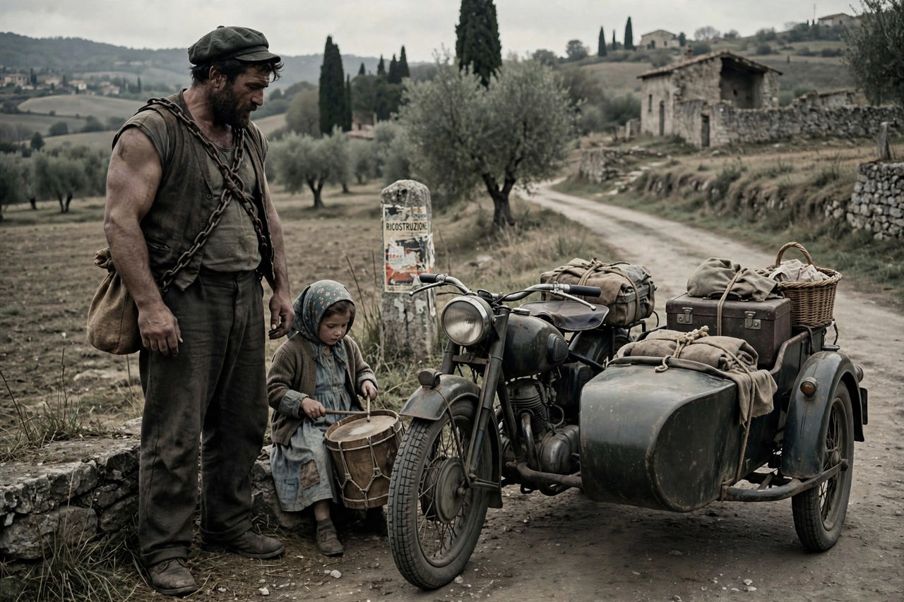

| La Strada | |
|---|---|
 Zampanò and Gelsomina on the road | |
| Directed by | Federico Fellini |
| Written by | Federico Fellini, Tullio Pinelli, Ennio Flaiano |
| Starring | Anthony Quinn, Giulietta Masina, Richard Basehart |
| Music by | Nino Rota |
| Release date | 1954 |
| Country | Italy |
| Language | Italian |
La Strada (English: The Road) is a 1954 Italian drama film directed by Federico Fellini from a screenplay co-written with Tullio Pinelli and Ennio Flaiano. It stars Giulietta Masina (Fellini's wife) as the childlike Gelsomina and Anthony Quinn as the brutish travelling strongman Zampanò. The film won the inaugural Academy Award for Best Foreign Language Film at the 29th Academy Awards and is widely regarded as one of the most influential films of all time.
Gelsomina's impoverished mother sells her to Zampanò, a travelling performer whose act consists of breaking an iron chain by expanding his chest. Gelsomina serves as his assistant, playing the drum, announcing his act, and clowning for the crowd. Zampanò treats her with cruelty and indifference. They join a small circus where Gelsomina befriends Il Matto ("The Fool"), a kind-hearted tightrope walker and clown who torments Zampanò. After Zampanò kills Il Matto in a fight, Gelsomina falls into a traumatised decline; Zampanò abandons her on a roadside. Years later he learns of her death and, alone on a beach at night, breaks down in tears — the first sign of his humanity.
Fellini drew on his own road travels and on the rural Italy of his youth. The film was produced by Dino De Laurentiis and Carlo Ponti. Nino Rota's score, including the famous trumpet theme, became one of the most recognisable in cinema history.
Premiered at the Venice Film Festival in 1954, where it won the Silver Lion, La Strada marked Fellini's move away from strict neorealism toward a more poetic, symbolic style. The American critic A. O. Scott and many others have placed it among the greatest films ever made; Martin Scorsese has cited it as a major influence.